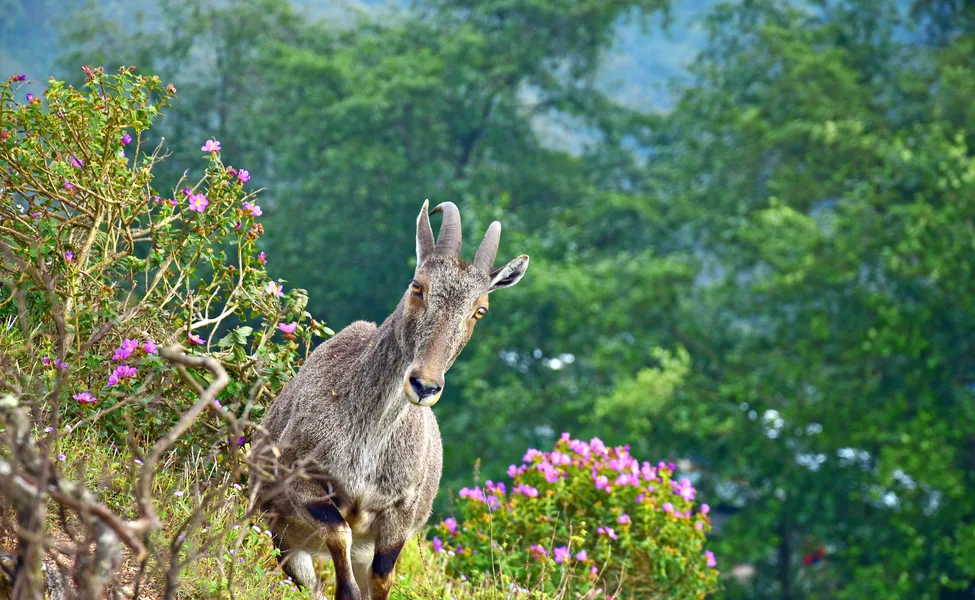
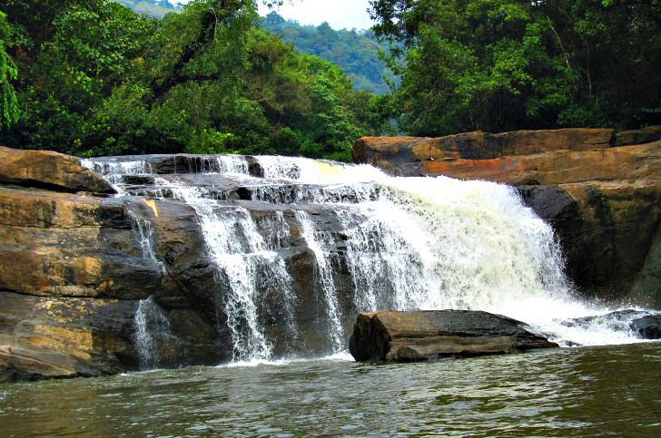

A landlocked district, Idukki is one of the most nature rich areas of Kerala.Idukki district is a densely forested, mountainous region in the south Indian state of Kerala. In the north, Anamudi mountain towers over Eravikulam National Park, where the rare, blue Neelakurinji flower blooms every 12 years. Nearby, Munnar is a hill station known for its sprawling tea plantations and Tea Museum. Farther south is the vast, curved Idukki Dam and Periyar National Park, a tiger and elephant reserve. High ranges and wooded valleys are girded by three main rivers – Periyar, Thalayar and Thodupuzhayar – and their tributaries. The River Pamba also has its origin here. As a tourist destination, Idukki offers diverse attractions like Wildlife sancturies, Hill stations, Dams, Spece plantation tours, Mountain treks, Elephant rides etc.